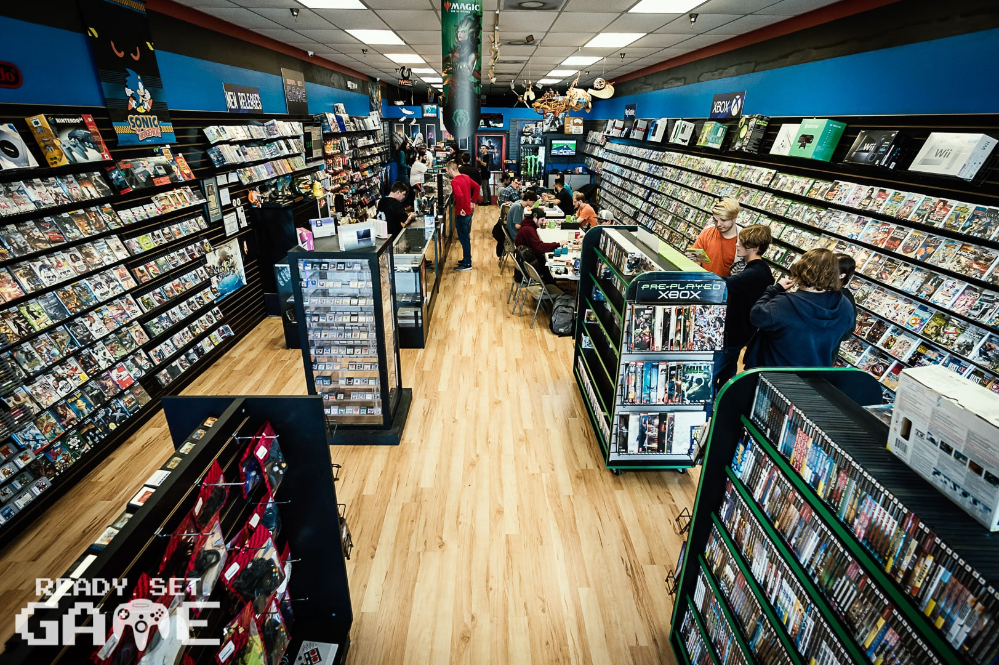
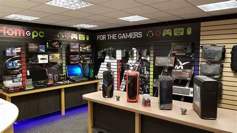
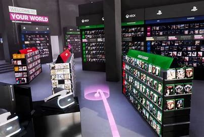

ABOUT US
Welcome to SR Gaming, where we celebrate the thrill of gaming and bring together enthusiasts from all walks of life. With multiple branches spread across Sri Lanka, we are proud to provide gamers with top-notch products and exceptional services. Whether you’re a hardcore gamer, a casual player, or someone looking for the perfect gift for a gaming enthusiast, we’ve got you covered. At SR Gaming, we aim to create a haven for gamers—a place where you can explore the latest consoles, accessories, and games while enjoying a welcoming community of like-minded individuals. Every branch of SR Gaming is designed with your needs in mind, offering convenient locations, flexible hours, and a wide selection of premium gaming gear.
-

- COLOMBO BRANCH
- KANDY BRANCH
- GALLE BRANCH
Located in the prestigious Colombo City Centre, this branch is the flagship store of SR Gaming. It offers an unparalleled shopping experience in a modern, vibrant setting. As the hub of gaming in the city, the Colombo branch features the latest consoles, top-tier gaming accessories, and an extensive library of games across all platforms. Whether you’re looking for exclusive deals, pre-ordering the hottest new releases, or exploring the latest gaming tech, this branch has it all. With easy access and ample parking, it’s the perfect spot for gamers to explore and shop. Opening Hours: 10:00 AM Closing Hours: 9:00 PM
Situated in the bustling Kandy City Centre, our Kandy branch brings the world of gaming to the heart of the hill country. This location offers a curated selection of gaming consoles, accessories, and titles to meet the needs of casual and dedicated gamers alike. Known for its warm and inviting atmosphere, the Kandy branch is perfect for families, students, and professionals looking to upgrade their gaming setups or discover the latest trends. With its convenient location and exceptional customer service, this branch is a favorite among gaming enthusiasts in the region. Opening Hours: 10:00 AM Closing Hours: 8:30 PM
Perched in the historic and iconic Galle Fort, directly in front of the famous Clock Tower, our Galle branch is a true blend of history and modernity. This branch offers a unique gaming experience in a scenic location, making it a must-visit for locals and tourists alike. With a wide range of consoles, accessories, and games, it caters to gamers who value quality and variety. The charming surroundings and knowledgeable staff make every visit memorable, whether you’re exploring the latest gaming innovations or finding the perfect gift.
STORE SUMMARY TABLE
| BRANCH | OPEN HOURS | SPECIAL FEATURES |
|---|---|---|
| COLOMBO | 10AM-9PM | LARGEST SELECTION OF GAMES |
| KANDY | 10AM-8.30PM | SERENE LOCATION WITH EXCELLENT DEALS |
| GALLE | 9.30AM-8PM | COASTAL BRANCH WITH EXCLUSIVE ITEMS |
Our mission is to create the ultimate destination for gamers, where passion meets innovation. SRGAMING.LK, we aim to provide top-quality games, gear, and experiences that bring players together, whether you're a casual gamer or a hardcore enthusiast. We’re committed to building a vibrant gaming community by offering exceptional products, hosting exciting events, and supporting gamers at every level
Contact us
Contact-011729729
MAIL US-SRGAMING.LK@GMAIL.COM